Subject: Drain of victim wallet 0x7eee…ac76 and associated cluster, first surfaced publicly by Eli5DeFi (X/Twitter).
Laundering corridor: BSC / EVM → Solana → Tron, consolidated through centralized-exchange (CEX) infrastructure (KuCoin, HTX; OKX and HitBTC observed peripherally).
Core technique: deposit/withdrawal timing-and-amount correlation ("time analysis") to bridge CEX hot-wallet boundaries.
Classification: Public (portfolio edition); all underlying data is publicly observable on-chain.
Report ID: ELI5DEFI-2026-001
Author: Federico Ferrari
Date of issue: 9 July 2026
Investigation window: on-chain activity observed approximately 19 Apr 2026 – 09 May 2026 (UTC); publicly surfaced by Eli5DeFi on 10 May 2026.
This document is an intelligence product, not a legal determination. Blockchain analysis establishes the movement of value between addresses. It does not, on its own, establish the real-world identity or intent of the natural or legal persons who control those addresses. Every attribution of an address to an exchange, to a victim, or to the threat actor carries an explicit confidence level and should be read at that level.
Confidence terms are used consistently throughout:
| Term | Meaning in this report |
|---|---|
| Confirmed / fact | Directly observable on a public block explorer or in an attached capture (for example a transaction value, timestamp, or counterparty label shown by the explorer). |
| High confidence | Inference supported by several mutually reinforcing on-chain indicators, with no competing explanation identified. |
| Moderate confidence | Inference supported by a recognized pattern (for example size-and-timestamp correlation across a CEX) but with residual ambiguity. |
| Low confidence / investigative lead | A plausible link not yet corroborated; included to direct further work, not to support a conclusion. |
Two conventions govern the figures. Dollar values for victim losses and aggregate flows are
deliberately presented rounded (for example ≈ $90k rather than a to-the-dollar figure); the
rounding is presentational and does not signal doubt about the underlying observation. A
value shown to the cent (for example 27,471.1699 USDT) is transcribed directly from a
block-explorer capture and is treated as a confirmed observation of that specific
transaction.
Scope and completeness. This is a demonstrative investigative work product, not an exhaustive or court-grade account of the campaign; its purpose and boundaries are set out in §3.5, and open lines of inquiry are collected in §15. Where an intermediate pass-through hop was verified on-chain but adds no analytical value, the hop is described and marked as verified rather than reproduced as a figure, to keep the evidentiary chain concise.
Between approximately 19 April and 9 May 2026, an organized threat actor drained
multiple externally-owned wallets and laundered the proceeds through a cross-chain corridor
built to break on-chain traceability at centralized-exchange boundaries. One of the drained
wallets was 0x7eee…ac76; its compromise was brought to public attention by the Eli5DeFi
account on X on 10 May 2026 (https://x.com/Eli5defi/status/2053261549750595836).
Eli5DeFi was the first to report the drain publicly, which is not the same as being the
first wallet hit.
Reconstructed hop by hop (§7–§12), the laundering methodology follows a repeating pattern:
create calls (§8, Fig. 2–3) and, on a parallel leg, 1inch arbitraryCalls
transactions (§11.2, Fig. 9); in both variants the calldata encodes the true
beneficiary address, which can be recovered by decoding the order fields.Tracing back from the Tron consolidation layer and re-applying the same time analysis
surfaced additional victims beyond the original 0x7eee…ac76 (§11).
Headline figures (rounded). The consolidation path anchored at the actor's first
consolidation address 0x9cc…c665 carries roughly $290k of aggregate throughput
(Fig. 1), which the analyst assesses is very likely stolen proceeds in the aggregate. Only the directly observable, unobfuscated
transfers are enumerated below as named victims: V1 at ≈ $16k, plus V7–V9 at ≈ $90k, ≈ $25k
and ≈ $10k respectively (§7.1). The balance reached the address through further obfuscation
paths that were not reconstructed. The separate V2 path adds ≈ $54k (§8), bringing the total
attributable to this cluster alone to roughly $345k; the Tron consolidation layer
(§12) then shows further large inflows on top of that, so the true campaign figure is
materially higher. Individual laundered tranches downstream fall in the ~$19k–$57k range
per hop. On the Tron layer, one address received a single inbound transfer of ≈ 226,714.93
USDT and a parallel address ≈ 149,741.49 USDT. No single reconciled, double-count-free
campaign total is asserted here (§13, §15).
Key attributions (confidence):
0x7eee…ac76 to the point
of off-ramp or consolidation.On-chain activity on BNB Smart Chain (BSC), Ethereum, Solana and Tron associated with the addresses listed in §5 and Appendix A (§17), within the observed window (§3.4).
This report is a demonstrative investigative work product, prepared on a best-effort basis within a bounded time budget. Its purpose is to evidence methodology and analytical tradecraft, not to stand as a complete or court-grade account of the campaign. Tracing was carried far enough to establish and corroborate the laundering pattern and the principal flows, and was deliberately not pushed to exhaustion. Several branches that transited CEX infrastructure, along with value the analyst assesses likely passed through mixing services, were not fully resolved; further victims or off-ramps beyond those listed may exist. Where a flow was left open, that is stated explicitly.
The assessed initial-compromise vector is private-key compromise: multiple victim wallets are swept across more than one chain (§8). This assessment is held at moderate confidence and sits outside the on-chain scope of the report.
Approach. Standard hop-by-hop fund-flow tracing, combined with deposit/withdrawal
timing-and-amount correlation at CEX boundaries (formalized in §6) and with calldata
decoding of 1inch order flows (limit-order create and arbitraryCalls) to recover
beneficiary addresses (§8, §11.2).
Primary sources. Public block explorers: BscScan (BSC), Etherscan (Ethereum), Solscan (Solana), and Tronscan (Tron), together with an attribution and graph provider (Arkham Intelligence, evidenced by the captured graph views, Fig. 1).
Evidentiary discipline. Every material hop is anchored to (a) a transaction hash or explorer view and (b), where attribution is asserted, the explorer-provided entity label (for example "HTX: Hot Wallet" or "KuCoin: Deposit Address"). Inferences that go beyond what an explorer shows are labelled with the confidence terms in §1.
A note on the USDT-TRON token contract. Several Tron captures show
TR7NHqjeKQxGTCi8q8ZY4pL8otSzgjLj6t (abbreviated TR7NHq…Lj6t) in the asset column. This is
the official Tether USDT TRC-20 contract, that is, the token rather than a participant
address. It is excluded from the address-of-interest list to avoid creating a false node, a
distinction worth keeping in mind when reading the Tron-side captures (Fig. 8, 10–11).
For readability, identifiers in the tables of this section are shown in short form (leading and trailing characters, on a single line); the full values are consolidated in Appendix A (§17).
| # | Address | Basis | Confidence |
|---|---|---|---|
| V1 | 0x7eee…ac76 |
Primary drain, per Eli5DeFi; drain tx 0x83e8…f6f6 |
Confirmed (event), attribution per source |
| V2 | 0x5c71…9e1f |
Already compromised (ETH side drained); actor funded 0.02 BNB (0xf741…03bc) to also sweep the BSC side; see §8 |
High |
| V3 | 0x8016…f978 |
Linked via bridger 0xbcf1…6089 |
Moderate (lead) |
| V4 | 0x5acb…a508 |
Linked via bridger 0xbcf1…6089 |
Moderate (lead) |
| V5 | 0xb089…c85e |
Linked via bridger 0xbcf1…6089 |
Moderate (lead) |
| V6 | 0x20ef…ee90 |
Linked via bridger 0xbcf1…6089 |
Moderate (lead) |
| V7 | 0x48ad…5860 |
Direct transfer to actor consolidation 0x9cc…c665; ≈ $90k drained (§7.1) |
High |
| V8 | 0x1F5f…F2b0 |
Direct transfer to actor consolidation 0x9cc…c665; ≈ $25k drained (§7.1) |
High |
| V9 | 0x0446…a93f |
Direct transfer to actor consolidation 0x9cc…c665; ≈ $10k drained (§7.1) |
High |
Only addresses with an evidenced role in the narrative are tabulated below. The intermediate
pass-through and fan-out hops on the upper path (0x4ed0…, 0xc450…, 0xa499…, fan-out
node 0xDE9d…, secondary node 0x623E…) carry negligible residual balances and are shown in
the master graph (Fig. 1) rather than repeated here.
| Address | Role (as evidenced) |
|---|---|
0x9cc…c665 |
Actor consolidation address; direct-transfer destination from V1 and V7–V9; anchors a consolidation path carrying ≈ $290k aggregate throughput (§7.1) |
0x364b…8c44 |
V2 path hop 1 |
0x0c89…0871 |
V2 path hop 2 |
0x817f…979c |
V2 path hop 3; 1inch order maker (Fig. 2–3) |
0xb3fD…D9C7 |
Beneficiary recovered from 1inch order receiver field (Fig. 3) |
0x02Da…bB20 |
Second bridging address (paired with the recovered beneficiary); link verified on-chain, supporting capture not reproduced (§8) |
0xbcf1…6089 |
Bridger linking V3–V6 |
0xE62a…Fa4a |
BSC sender in additional-victim leg (0xee34…d4a8) |
0x40a0…A152 |
Sender in captured HTX BNB deposit (Fig. 4); one verified pass-through hop downstream of the §8 bridging addresses (intermediate hop not reproduced) |
Only the exchange deposit addresses are listed here; these are the actionable RFI targets. Exchange hot and withdrawal wallets (HTX Hot Wallet, KuCoin Hot Wallet 2, "Kucoin 4", OKX Hot Wallet 8) are exchange-owned infrastructure rather than actor-specific, and appear in the figures where relevant.
| Entity | Address | Chain | Source |
|---|---|---|---|
| KuCoin Deposit Address (V1 fan-out) | 0x544B…5fFe |
EVM | Fig. 1 |
| KuCoin Deposit Address (V1 fan-out) | 0x3F5a…02E6 |
EVM | Fig. 1 |
| KuCoin Deposit Address (V1 fan-out) | 0x827C…50d1 |
EVM | Fig. 1 |
| KuCoin Deposit Address (V1 fan-out) | 0xb555…acE3 |
EVM | Fig. 1 |
| KuCoin Deposit Address (V1 fan-out) | 0x5c5B…5bdD |
EVM | Fig. 1 |
| KuCoin Deposit Address (V1 fan-out) | 0x7a5e…0eAd |
EVM | Fig. 1 |
| HitBTC Deposit (V1 fan-out) | 0xBaB2…b135 |
EVM | Fig. 1 |
The equivalent deposit addresses on the V2 path have not yet been expanded to full form and remain an open item (§15).
| Address | Role (as evidenced) | Confidence |
|---|---|---|
TQLXH45…m62m |
Terminal consolidation address for the recovered flows (§10–§12) | High (topology verified; intermediate hop not reproduced) |
TYZfYaj…ZE84 |
Recipient of KuCoin withdrawal (Fig. 7) | Confirmed (tx) |
TF1KHXD…Rcv4 |
Staging address, second cluster (Fig. 8); direct transfer into TQLXH45… (§11.1) |
High |
TRHcAhJ…AmZU |
Received ≈226,714.93 USDT (Fig. 10); fed consolidation | Confirmed (tx) |
TTMdreb…L3xn |
Received ≈149,741.49 USDT (Fig. 11) | Confirmed (tx) |
TUdbHz1…bhdA |
Pre-consolidation, HTX-fed (Fig. 10) | Confirmed (tx) |
TKiPseUe5o…kpBV9Qb |
Pre-consolidation, HTX-fed (Fig. 11) | Confirmed (tx) |
| Address | Role | Source |
|---|---|---|
5vC4of…gt8eqH |
Recipient of HTX USDT withdrawal (actor Solana account) | Fig. 5 |
J1XSfoR9…hb1odK |
Actor Solana wallet forwarding into the KuCoin deposit | Fig. 6 |
When laundered value enters a centralized exchange, the on-chain trail stops at the exchange's hot wallet. The exchange credits an internal ledger and later pays out from a different hot wallet, often on a different blockchain. No direct on-chain edge links the deposit to the withdrawal; that link lives inside the exchange's private books. This gap is what the actor exploits by chain-hopping through HTX and KuCoin.
Time analysis reconstructs the missing edge probabilistically, by matching a deposit to a withdrawal on three jointly observable properties:
A single match is suggestive. A repeating, self-consistent chain of matches across several independent hops (§9–§11) is much harder to write off as coincidence, and lifts the combined inference to moderate-to-high confidence. The output is still a correlation, not proof that the exchange moved those particular coins. It is weakest where the amount is round or the deposit lands in a busy window, and strongest where the amount is distinctive and the timing tight. Each pairing below is rated on its own merits.
| Step | Event | Amount (as captured) | Timestamp (UTC) | Δt | Fig. |
|---|---|---|---|---|---|
| A | Deposit BNB → HTX Hot Wallet | 44.4279 BNB (≈ $27,340.94) | 01 May 2026 14:45:19 | n/a | 4 |
| B | Withdrawal HTX → Solana (USDT) | 27,471.1699 USDT (≈ $27,471.16) | 01 May 2026 14:47:13 | +≈2 min | 5 |
| C | Deposit Solana → KuCoin (USDT) | 27,471.1699 USDT (≈ $27,471.16) | 01 May 2026 15:10:16 | +≈23 min | 6 |
| D | Withdrawal KuCoin "Kucoin 4" → Tron (USDT) | 27,469.5 USDT | 01 May 2026 15:13:42 | +≈3 min | 7 |
The chain is internally consistent from end to end. The A→B leg (the HTX hop) pairs a BNB deposit worth ≈$27,340.94 with a 27,471.1699 USDT withdrawal about two minutes later; the small (~$130) difference is the expected result of the BNB→USDT conversion, a volatile asset priced at deposit against a stablecoin at withdrawal, net of fees. The B→C leg is what joins the two exchanges: the 27,471.1699 USDT that leaves HTX on Solana arrives at the KuCoin deposit leg to the cent, tying the two CEX hops into a single flow rather than two coincidentally similar traces. The C→D leg (the KuCoin hop) then pairs that 27,471.1699 USDT deposit with a 27,469.5 USDT withdrawal on Tron about three minutes later, the ≈1.67 USDT difference matching the KuCoin withdrawal fee. The one join that time analysis cannot observe directly, namely which deposit funded which withdrawal inside each exchange, is exactly what an RFI (§16) would settle.
Confirmed (event). Victim wallet 0x7eee669d684b6096a6ad67e993f7d384ad02ac76 (V1) was
drained on 09 May 2026 at 15:55:03 UTC in transaction
0x83e84825464b53e83e1102a399a779cf6797c38f99191b6cda2387cf6409f6f6,
publicly flagged by Eli5DeFi (source post:
https://x.com/Eli5defi/status/2053261549750595836). The wallet was emptied of its token
holdings, the MEGA token among them, for an estimated ≈ $16k.
Confirmed (graph). Value moved by direct transfer to
0x9cc0831db1b224fd675a21ac0d0adda82631c665, which is itself an actor consolidation address
rather than a single-hop relay. Besides V1 it receives direct-transfer drains from several
other victims (§7.1); from there, value passes through a series of pass-through hops before
fanning out to multiple exchange deposit addresses (Fig. 1).
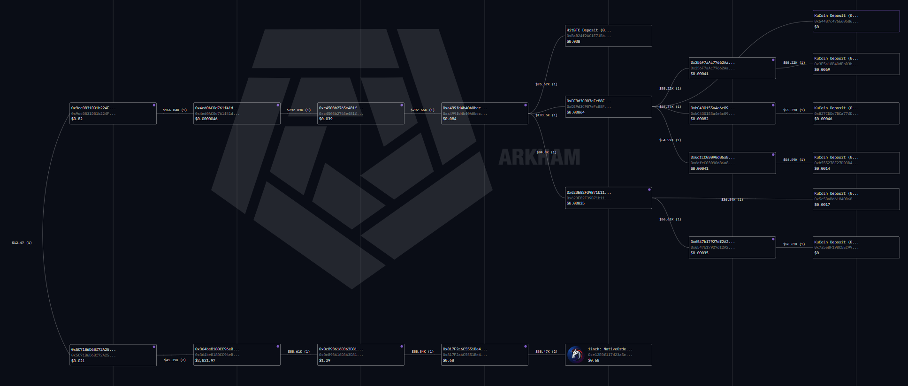
0x9cc…c665. Centre: pass-through hops 0x4ed0… → 0xc450… → 0xa499… → fan-out node 0xDE9d…. Right: terminal KuCoin deposit addresses (and one HitBTC deposit). Lower row: the V2 chain 0x5c71… → 0x364b… → 0x0c89… → 0x817f… → 1inch NativeOrder. Edge labels are USD-equivalent throughput; node figures are residual balances. The terminal deposit-address labels are expanded in full in §5.3; remaining truncated intermediaries are tracked in §15.Observation (high confidence). Edge values on the upper path are large and increase
across hops: ≈$166.84K leaves 0x9cc…c665, merges with further inflows at the next hop
0x4ed0…, and continues as ≈$292K across the following two hops before ≈$193.5K enters the
fan-out node. The step-up from ≈$166.84K to ≈$292K confirms that the path aggregates value
from more than one source: 0x9cc…c665 is the entry point, but the ≈$290k aggregate forms at
0x4ed0…, not at 0x9cc…c665 itself. Edge labels are aggregate USD-equivalent throughput,
not victim-specific loss. The analyst's working assessment is that the full ≈$290k carried by
this path is very likely stolen proceeds; even so, only the directly observable, unobfuscated
transfers are enumerated as named victims below (§7.1). The balance reached the path through
further obfuscation that was not reconstructed within the report's time budget, and is
therefore left unattributed rather than assigned to specific victims.
0x9cc…c665)In addition to V1, the consolidation address 0x9cc…c665 receives direct-transfer
drains from at least three further victim wallets. These directly observable transfers
account for roughly $141k of the ≈$290k carried by the consolidation path (§7); the dollar
figures below are rounded to the nearest thousand (§1):
| Victim | Address | Approx. drained | Basis |
|---|---|---|---|
| V1 | 0x7eee…ac76 |
≈ $16k | Direct transfer (drain tx 0x83e8…f6f6) |
| V7 | 0x48ad…5860 |
≈ $90k | Direct transfer to 0x9cc…c665 |
| V8 | 0x1F5f…F2b0 |
≈ $25k | Direct transfer to 0x9cc…c665 |
| V9 | 0x0446…a93f |
≈ $10k | Direct transfer to 0x9cc…c665 |
These are high-confidence victims: direct, unobfuscated transfers into an actor-controlled consolidation address. The dollar amounts are rounded, and the listed wallets are unlikely to be the only inbound victims (see the completeness caveat, §3.5).
Fan-out to CEX deposit addresses (confirmed labels, truncated values). The node
0xDE9d3C907eFc88F… distributes to several KuCoin Deposit addresses and one HitBTC Deposit
address, each receiving ≈$54.6K–$95.7K (Fig. 1). The deposit addresses are listed in full in
§5.3 and Appendix A, ready for an exchange RFI.
A distinctive piece of tradecraft appears on the V2 path. By this point victim V2
(0x5c71b6d6bf72a25df3f42b1825438ae97e7a9e1f) was already compromised: its ETH-side assets
had been drained, and the actor then funded 0.02 BNB
(tx 0xf7418b0a7f22a5eb93278e6198c52a8fa513dc1a265f40964f1c1e90d75203bc) to cover BSC gas
and sweep the BSC side as well. The BSC-side funds then moved
0x364b…c44 → 0x0c89…871 → 0x817f2a6c5551be49e7da0609700971595c8d979c (Fig. 1, lower
row).
That last address then submitted 1inch limit-order create transactions on Ethereum (hence
the Ethereum-mainnet WETH makerAsset below), with BSC as the destination chain into which
the resulting value is routed toward the HTX deposit of §9. The order calldata
is a tuple of uint256 fields (Fig. 2); decoding the relevant fields from their integer form
to addresses reveals the intended beneficiary (Fig. 3):
makerOrder.maker → 0x817f2a6c5551be49e7da0609700971595c8d979c (the actor address itself), which confirms the decode is internally consistent.makerOrder.receiver → 0xb3fd7de3f8242d925e0ea9e1660e395def56d9c7, the recovered beneficiary address.makerOrder.makerAsset → 0xc02aaa39b223fe8d0a0e5c4f27ead9083c756cc2 (WETH).makerOrder.takerAsset → 0xda0000d4000015a526378bb6fafc650cea5966f8.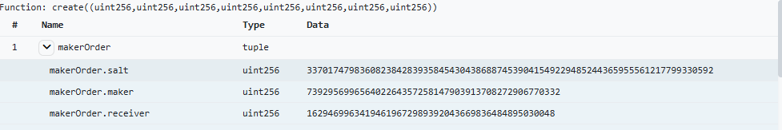
create((uint256,…)) input. The makerOrder tuple carries salt, maker and receiver as uint256, not yet human-readable as addresses.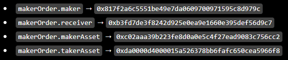
maker, receiver, makerAsset (WETH) and takerAsset recovered as addresses. The receiver field exposes beneficiary 0xb3fd7de3…56d9c7, which is not visible from the transfer graph alone.Assessment (high confidence on the decode; moderate on intent). Recovering
0xb3fd7de3…56d9c7 from the order receiver field is a deterministic decode and is treated
as confirmed. Paired with it in the same flow is a second bridging address,
0x02DaadFA6bbD1d99B2D53fDC6Cbe0DeAab8FbB20; the link was verified on-chain, and the
supporting capture is not reproduced in this edition (§1). Here the 1inch
limit order functions as an obfuscation layer: the beneficiary is encoded in calldata rather
than appearing as a plain transfer counterparty.
The two bridging addresses recovered in §8 then deposited to HTX, in two transactions of ≈ $27k each. The captured deposit (Fig. 4) and the matching withdrawal (Fig. 5) are the first CEX boundary crossed by time analysis (§6.3, steps A–B).
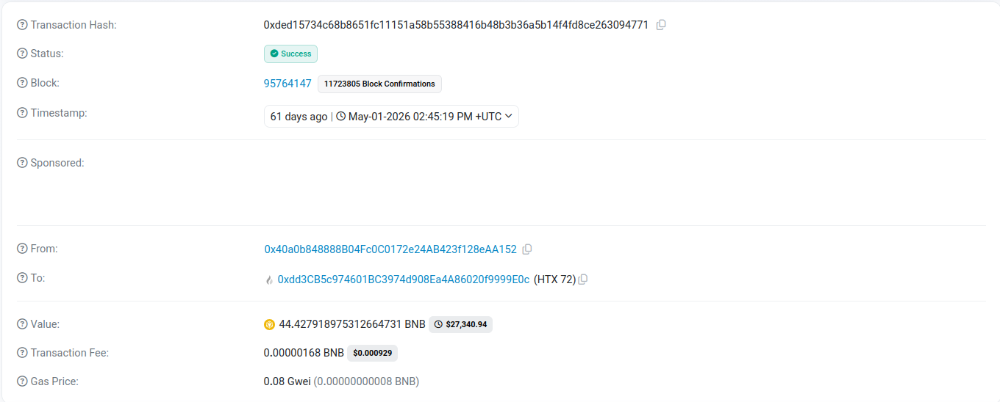
0xded15734…263094771, 44.4279 BNB (≈ $27,340.94) to the HTX 72 hot wallet 0xdd3CB5c974601BC3974d908Ea4A86020f9999E0c, 01 May 2026 14:45:19 UTC. Note: the From-address shown, 0x40a0b848…EAA152, sits one verified pass-through hop downstream of the §8 bridging addresses; the intermediate hop is not reproduced as a figure (§1).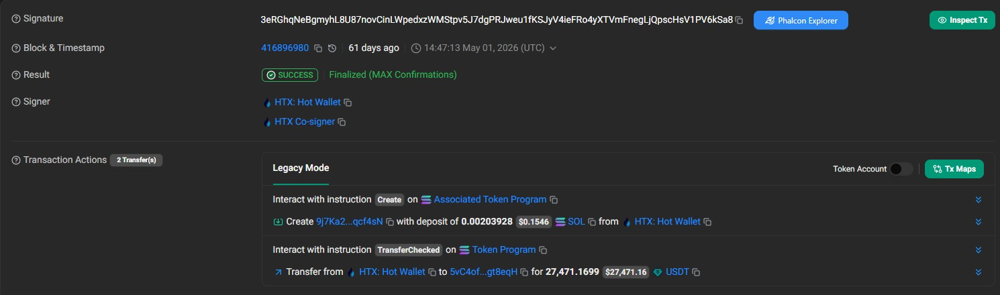
5vC4of…gt8eqH, 01 May 2026 14:47:13 UTC, about 2 min after the Fig. 4 deposit.Assessment (moderate–high confidence). Direction, exchange labels and timing are confirmed from the explorers. The deposit-to-withdrawal pairing is strong: a ≈2-minute gap, the expected BSC→Solana corridor, and a close value match. The residual difference (BNB in ≈$27.34k against USDT out ≈$27.47k) is expected and does not weaken the pairing; it reflects the BNB→USDT conversion (a volatile asset valued at deposit against a stablecoin at withdrawal), net of fees. On the attribution side, the captured depositor reaches HTX one verified pass-through hop downstream of the §8 bridging addresses (see the Fig. 4 note).
The withdrawal lands at the actor's Solana account 5vC4of…gt8eqH, which then forwards the
funds one hop on Solana (intermediate transfer not reproduced) to J1XSfoR9…hb1odK. That
address transfers the same amount (27,471.1699 USDT) into the KuCoin deposit leg (§10,
Fig. 6). The exact-amount carry-through across the 5vC4of… → J1XSfoR9… → KuCoin path is
what links the HTX hop to the KuCoin hop that follows.
The Solana-side funds were then deposited to KuCoin and withdrawn on Tron, the second CEX boundary, again bridged by time analysis (§6.3, steps C–D).
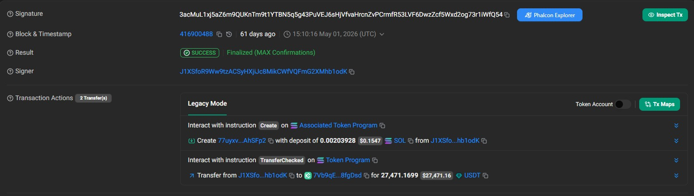
J1XSfoR9…hb1odK → KuCoin Solana hot wallet 7Vb9qE…8fgDsd, 27,471.1699 USDT (≈ $27,471.16), 01 May 2026 15:10:16 UTC, the identical amount carried over from the Fig. 5 HTX withdrawal.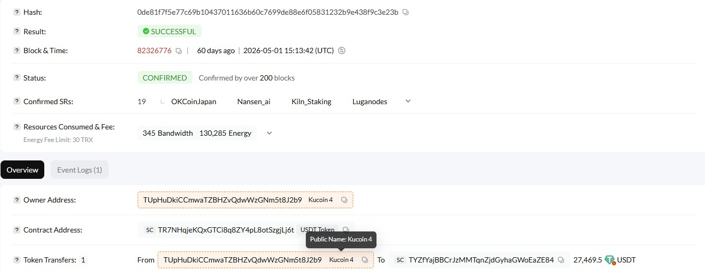
TUpHuDkiCCmwaTZBHzvQdwWzGNm5t8J2b9) → TYZfYajBBCrJzMMTqnZjdGyhaGWoEaZE84, 27,469.5 USDT, tx 0de81f7f…9c3e23b, 01 May 2026 15:13:42 UTC, about 3 min after the Fig. 6 deposit, amounts matching to ≈1.67 USDT.Assessment (high confidence on this pairing). The C→D match is among the strongest links
in the chain: near-identical amounts (Δ ≈ 1.67 USDT, the KuCoin withdrawal fee) over a
≈3-minute window, with the deposit amount itself carried over unchanged from the HTX
withdrawal (§9). That ties the two CEX hops into a single flow. The withdrawal lands at
TYZfYajBBCrJzMMTqnZjdGyhaGWoEaZE84, from which the funds move on, through one verified
pass-through hop (not reproduced as a figure, §1), to the Tron consolidation address
TQLXH45i7JboiDVVF2jSGSiTFEfrUVm62m.
With the May-01 flow resolved forward to the Tron consolidation address
TQLXH45i7JboiDVVF2jSGSiTFEfrUVm62m (§10), the investigation pivoted and worked the same
address backwards: instead of following new value downstream, the consolidation address's
earlier inflows were traced in reverse to surface sibling flows. TQLXH45… received a
direct transfer from the Tron staging address TF1KHXD9H8VtDcS4cvrQb6d6Di4HdURcv4.
That staging address in turn shows three USDT inflows (Fig. 8):
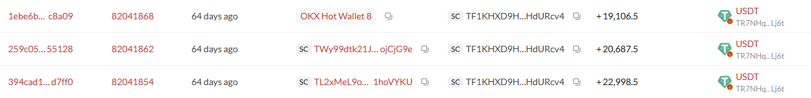
TF1KHXD9H8VtDcS4cvrQb6d6Di4HdURcv4 receives USDT inflows of +19,106.5 (from OKX Hot Wallet 8), +20,687.5 and +22,998.5. The asset column TR7NHq…Lj6t is the USDT token contract, not a counterparty (§4).Applying the same time analysis (§6) to the +22,998.5 USDT inflow, the leg was reconstructed
backwards transaction by transaction; each hop is cited here by its transaction hash rather
than by its receiving address: the Tron receive from KuCoin, tx bc2fb3904bacbee8dc0afc57022f18a73bd597fcd7a8faf5ef58e29c5135e870; behind it the matching Solana-side deposit into KuCoin, tx signature quhn9ReYT7s8kSiG4RPauX2z3mXuurBkYZn3u5rhYCoBX2W3MxRHFgPfm4XhnggEpxXRYdEneXUXViXknsAQaYw; and behind that the originating BSC leg, tx 0xee348feff0ea5f2d311df3bbf2dba73ac374c8350be067d3a4963a95c27ed4a8 from sender 0xE62ad78a3CB6adEB8bf8eE3b2d8e3458bCcdFa4a, the origin of the flow. This is the same BSC → Solana → KuCoin → Tron
corridor established in §9–§10, executed a second time.
Examining who bridged this leg identifies the bridging address
0xbcf1fc903a704746fea5f31cef0f4b37fbec6089, which connects to four further victim
addresses (V3–V6, §5.1):
0x8016ffb74eecde79ff6a5f52f2db1bf4da6ff978,
0x5acb72f0b6dbaf17d98154b9c7f5dda0b827a508,
0xb08902f0034a7acd320783aa249444143cddc85e,
0x20efcc9aff67324208fbd6a3701a8fd1dcbeee90.
A parallel instance (dated 21 Apr 2026) again routes value through 1inch, this time via
arbitraryCalls transactions in ETH (a variant of the §8 obfuscation primitive), from the
same bridging address (Fig. 9), feeding the Tron staging address of §11.1:
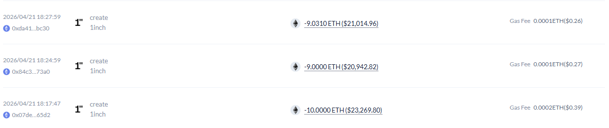
arbitraryCalls transactions, 21 Apr 2026: −9.0310 ETH (≈ $21,014.96), −9.0000 ETH (≈ $20,942.82), −10.0000 ETH (≈ $23,269.80). Txs 0xda41…bc30, 0x84c3…73a0, 0x07de…65d2 (truncated).Assessment (moderate confidence). The three ETH transaction sizes (≈$21.0k / $20.9k / $23.3k) correspond by size to the three Tron USDT inflows (≈$19.1k / $20.7k / $23.0k): the same time-analysis logic across a CEX boundary, with OKX now appearing as a third exchange in the corridor. Two of the three matches are close (within ≈1–2%); the third (the ≈$21.0k transaction against the +19,106.5 inflow) is looser at ≈$1.9k and may reflect price movement or fees.
The equivalent time-analysis legs for the remaining inflows are not restated transfer by transfer: the pattern is identical to the worked example in §6.3, and repeating each pairing would add bulk without analytical value. All recovered flows on this cluster route to the same Tron consolidation address.
The layer above the consolidation address was surveyed, deliberately, without being pushed to exhaustion. Two large Tron consolidation inflows stand out, each aggregated on a pre-consolidation address fed directly out of the HTX hot wallet in mid-five-figure USDT tranches and then swept onward in a single transfer:
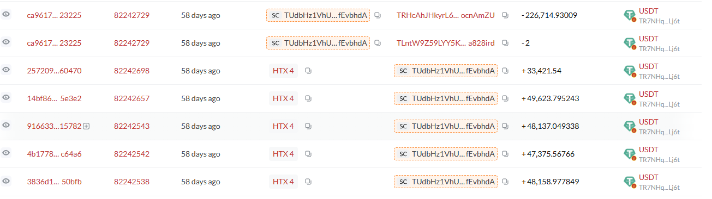
TUdbHz1VhUoHV2w9anFkz3KzKjifEvbhdA: five HTX 4 USDT inflows (33,421.54 / 49,623.795243 / 48,137.049338 / 47,375.56766 / 48,158.977849) aggregated, then 226,714.93009 USDT swept to TRHcAhJHkyrL6…ocnAmZU, with a final 2 USDT transfer to TLntW9Z…a828ird. The five inflows sum to 226,716.93009 USDT, exactly the sweep plus the 2 USDT residue: the address is emptied to zero and the captured inflow set is complete.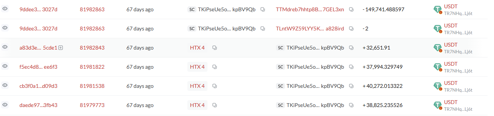
TKiPseUe5o…kpBV9Qb: four HTX 4 USDT inflows (32,651.91 / 37,994.329749 / 40,272.013322 / 38,825.235526) aggregated, then 149,741.488597 USDT swept to TTMdreb7hhtp8BVUFzGK4bj8Lrz7GEL3xn, with the same 2 USDT residue to TLntW9Z…a828ird. The four inflows sum to 149,743.488597 USDT, exactly the sweep plus the residue: again a complete, zeroed-out set.Consolidation inflow (confirmed tx). The consolidation wallet received a direct transfer
(Tron tx 0e98dea94bdcb12595124f9d18ed95f1d4fc73fda6aa98575cff5744dccef85f) from
TRHcAhJHkyrL6vyUNDGsHvVXHE9ocnAmZU, the recipient of the ≈226,714.93 USDT sweep (Fig. 10).
Pattern (high confidence for the pattern; provenance assessed). The structure across
Fig. 10–11 is consistent: value cycles through HTX in mid-five-figure USDT tranches, is
aggregated on a staging address, and is swept into the consolidation layer, each staging
address being emptied to zero with a closing 2 USDT residue transfer to the same third
address (TLntW9Z…a828ird, Fig. 10–11), most plausibly a fee or residue payment, and not
treated as an address of interest. This is a standard layering-then-consolidation sequence. The analyst
assesses (low–moderate confidence, consistent with §3.3) that part of the value upstream of
these HTX-mediated inflows transited mixing or obfuscation services before reaching the
exchange.
Boundary of this trace (explicit). The victims behind these two inflow sets, roughly 226.7k and 149.7k USDT, were not enumerated. A preliminary reverse search did not surface additional victim wallets, and, consistent with the bounded scope set out in §3.5, this leg was recorded as an open line of inquiry (§15) rather than pursued to exhaustion. Given the scale of the amounts and the repetition of the campaign pattern, the analyst assesses it is likely that further drained users sit behind these flows; identifying them is the highest-value continuation of this work (§16).
0x9cc…c665 by direct transfer (≈$141k enumerated within ≈$290k
aggregate inbound; high confidence), V2 arrived by a separate path (high confidence), and
V3–V6 plus others remain leads. The proceeds were laundered through a repeatable
cross-chain corridor (BSC/EVM → Solana → Tron). Confidence: moderate-high for the
methodology; common control across all hops is moderate and is the principal item for
further corroboration.create calldata (§8), with arbitraryCalls used on a parallel
leg (§11.2). Confidence: high (deterministic decode).On a campaign loss total. No single reconciled figure is asserted. The consolidation
path anchored at 0x9cc…c665 alone carries ≈ $290k (assessed likely stolen; ≈$141k
of it enumerated by direct transfer, §7.1); the separate V2 path adds ≈$54k (§8), bringing
this cluster to roughly $345k, and the Tron layer shows two further large consolidation
inflows (≈226.7k and ≈149.7k USDT, §12). These figures cannot simply be summed: doing so
would double-count across the fan-out (Fig. 1), the CEX hops and the consolidation layer, and
the trace is not exhaustive (§3.5). A reconciled campaign total is an explicit open item
(§15).
The following are consistent with recognized money-laundering typologies for virtual assets (FATF red-flag indicators relating to transactions, anonymity and source of funds):
arbitraryCalls
(§8, §11.2).The items below are investigative continuations and preconditions for external action (exchange RFIs, victim notification, referral). They qualify the completeness of the trace, not the findings in §13.
TUdbHz1… and TKiPse… (≈226.7k and ≈149.7k USDT) were not traced back
to their source victims; a preliminary reverse search surfaced none. Deliberately left
open (§3.5); the highest-value continuation of this investigation.0x9cc…c665 alone (§7.1), with ≈$54k more on the V2 path (§8);
a reconciled, double-count-free figure across the second cluster and the Tron
consolidation layer has not been built.TKiPseUe5o…, §5.4), one Solana
account (5vC4of…, §5.5) and the Fig. 9 transaction hashes should be expanded to full
form so that every identifier in an outgoing RFI is cited in full.0xbcf1…6089 to monitoring for further movement and new victims.Identifiers confirmed in full are reproduced below without truncation; entries still truncated as captured are noted and tracked in §15.
Victims (full):
0x7eee669d684b6096a6ad67e993f7d384ad02ac76 (V1);
0x5c71b6d6bf72a25df3f42b1825438ae97e7a9e1f (V2);
0x8016ffb74eecde79ff6a5f52f2db1bf4da6ff978 (V3);
0x5acb72f0b6dbaf17d98154b9c7f5dda0b827a508 (V4);
0xb08902f0034a7acd320783aa249444143cddc85e (V5);
0x20efcc9aff67324208fbd6a3701a8fd1dcbeee90 (V6);
0x48ad22b0114b00d972c9ab51a41558fc5dd65860 (V7, ≈ $90k);
0x1F5fEB64834647585E201e1bC1A0Ab78751cF2b0 (V8, ≈ $25k);
0x0446219d289518868e76d08cee846804ae01a93f (V9, ≈ $10k).
Actor / pass-through (full where known):
0x9cc0831db1b224fd675a21ac0d0adda82631c665;
0x364be8180cc96eb43da4973f888ce29cc4fb8c44;
0x0c893616d363d81db393314cfdb85a1d54920871;
0x817f2a6c5551be49e7da0609700971595c8d979c;
0xb3fd7de3f8242d925e0ea9e1660e395def56d9c7;
0x02DaadFA6bbD1d99B2D53fDC6Cbe0DeAab8FbB20;
0xbcf1fc903a704746fea5f31cef0f4b37fbec6089;
0xE62ad78a3CB6adEB8bf8eE3b2d8e3458bCcdFa4a;
0x40a0b848888B04Fc0C0172e24AB423f128eAA152 (pass-through depositor into HTX, §9).
Exchange (full where known):
KuCoin deposit, V1 fan-out (EVM):
0x544B7c476E60586534992310a60B11230e3C5fFe,
0x3F5a18B40dFbD3b13ceA7bd4c133151BDD5602E6,
0x827CDDc7BCa77fD4fc97E2F66bD539493cD550d1,
0xb555278E27DD3D4FfeCD2b3A032803a829B3acE3,
0x5c5BaBd61840B684ce9B11d346ee02748D4b5bdD,
0x7a5eBF198C5EC99e67937689aEC581bB079b0eAd;
HitBTC deposit, V1 fan-out (EVM) 0xBaB24f2AC1E71Bbcf6336663024E6dD9EEcab135;
KuCoin "Kucoin 4" (Tron) TUpHuDkiCCmwaTZBHzvQdwWzGNm5t8J2b9;
USDT-TRON token contract (excluded as participant) TR7NHqjeKQxGTCi8q8ZY4pL8otSzgjLj6t.
Tron consolidation/staging (full where known):
TQLXH45i7JboiDVVF2jSGSiTFEfrUVm62m;
TYZfYajBBCrJzMMTqnZjdGyhaGWoEaZE84;
TF1KHXD9H8VtDcS4cvrQb6d6Di4HdURcv4;
TRHcAhJHkyrL6vyUNDGsHvVXHE9ocnAmZU;
TTMdreb7hhtp8BVUFzGK4bj8Lrz7GEL3xn;
TUdbHz1VhUoHV2w9anFkz3KzKjifEvbhdA.
Truncated as captured (§15): TKiPseUe5o…kpBV9Qb.
Solana (full where known):
J1XSfoR9Ww9tzACSyHXjiJc8MikCWfVQFmG2XMhb1odK (actor wallet, HTX→KuCoin leg);
5vC4of…gt8eqH (truncated as captured: actor Solana account, receiver of the HTX withdrawal, §15).
Transactions (full where known):
0x83e84825464b53e83e1102a399a779cf6797c38f99191b6cda2387cf6409f6f6 (V1 drain);
0xf7418b0a7f22a5eb93278e6198c52a8fa513dc1a265f40964f1c1e90d75203bc (gas to V2);
0xded15734c68b8651fc11151a58b55388416b48b3b36a5b14f4fd8ce263094771 (HTX BNB deposit, Fig. 4);
3eRGhqNeBgmyhL8U87novCinLWpedxzWMStpv5J7dgPRJweu1fKSJyV4ieFRo4yXTVmFnegLjQpscHsV1PV6kSa8 (HTX→Solana USDT withdrawal, May-01 chain, Fig. 5);
3acMuL1xj5aZ6m9QUKnTm9t1YTBN5q5g43PuVEJ6sHjVfvaHrcnZvPCrmfR53LVF6DwzZcf5Wxd2og73r1iWfQ54 (Solana→KuCoin USDT deposit, May-01 chain, Fig. 6);
0de81f7f5e77c69b10437011636b60c7699de88e6f05831232b9e438f9c3e23b (KuCoin Tron withdrawal, May-01 chain, Fig. 7);
0xee348feff0ea5f2d311df3bbf2dba73ac374c8350be067d3a4963a95c27ed4a8 (BSC, additional leg);
quhn9ReYT7s8kSiG4RPauX2z3mXuurBkYZn3u5rhYCoBX2W3MxRHFgPfm4XhnggEpxXRYdEneXUXViXknsAQaYw (Solana, KuCoin deposit leg, second cluster, §11.1);
bc2fb3904bacbee8dc0afc57022f18a73bd597fcd7a8faf5ef58e29c5135e870 (Tron receive, additional cluster);
0e98dea94bdcb12595124f9d18ed95f1d4fc73fda6aa98575cff5744dccef85f (consolidation inflow).
| Pairing | Deposit (chain, amount, UTC) | Withdrawal (chain, amount, UTC) | Δt | Confidence |
|---|---|---|---|---|
| HTX (§9) | BSC, 44.4279 BNB ≈$27,341, 01 May 14:45:19 | Solana, 27,471.17 USDT ≈$27,471, 01 May 14:47:13 | ≈2 min | Moderate–High |
| KuCoin (§10) | Solana, 27,471.17 USDT, 01 May 15:10:16 | Tron, 27,469.5 USDT, 01 May 15:13:42 | ≈3 min | High |
| 1inch→staging (§11.2) | ETH arbitraryCalls ≈$21.0k/$20.9k/$23.3k, 21 Apr |
Tron USDT +19,106.5/+20,687.5/+22,998.5 | n/a (size match) | Moderate |
| Figure | File (in assets/) |
Source capture (in source_captures/) |
|---|---|---|
| Fig. 1 | fig01_arkham_master_flow.png |
src_fig01_arkham_master_flow.png |
| Fig. 2 | fig02_1inch_create_calldata.png |
src_fig02_1inch_create_calldata.png |
| Fig. 3 | fig03_1inch_fields_decoded.png |
src_fig03_1inch_fields_decoded.png |
| Fig. 4 | fig04_htx_bnb_deposit.png |
src_fig04_htx_bnb_deposit.png |
| Fig. 5 | fig05_htx_sol_withdrawal.png |
src_fig05_htx_sol_withdrawal.jpeg |
| Fig. 6 | fig06_kucoin_sol_deposit.png |
src_fig06_kucoin_sol_deposit.jpeg |
| Fig. 7 | fig07_kucoin_tron_withdrawal.png |
src_fig07_kucoin_tron_withdrawal.jpeg |
| Fig. 8 | fig08_tron_staging_inflows.png |
src_fig08_tron_staging_inflows.png |
| Fig. 9 | fig09_1inch_eth_arbitrarycalls.png |
src_fig09_1inch_eth_arbitrarycalls.png |
| Fig. 10 | fig10_preconsol_tudbhz_htx.png |
src_fig10_preconsol_tudbhz_htx.png |
| Fig. 11 | fig11_preconsol_tkipse_htx.png |
src_fig11_preconsol_tkipse_htx.png |
End of report. This document is investigative work product; open lines of inquiry are collected in §15.